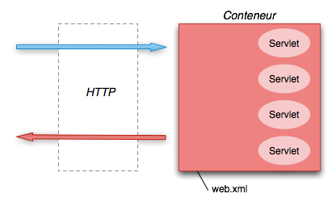
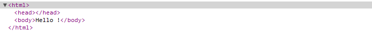

Nous allons ajouter nos premiers composants dans notre application web.
Les servlets sont les composants qui recoivent les requêtes http et générent les réponses.
La premier chose a ajouter afin de faire un war est le web.xml
C'est le descripteur de déploiement : il décrit les composants de l'application.
Si on essaye de faire un package, maven nous le dira aussi :
todooz > mvn package [INFO] Scanning for projects... [INFO] [INFO] ------------------------------------------------------------------------ [INFO] Building todooz 1.0-SNAPSHOT [INFO] ------------------------------------------------------------------------ [INFO] [INFO] --- maven-resources-plugin:2.4.3:resources (default-resources) @ todooz --- [WARNING] Using platform encoding (MacRoman actually) to copy filtered resources, i.e. build is platform dependent! [INFO] skip non existing resourceDirectory /Users/dbourdette/Documents/prezjava-todooz/src/main/resources [INFO] [INFO] --- maven-compiler-plugin:2.3.2:compile (default-compile) @ todooz --- [INFO] Nothing to compile - all classes are up to date [INFO] [INFO] --- maven-resources-plugin:2.4.3:testResources (default-testResources) @ todooz --- [WARNING] Using platform encoding (MacRoman actually) to copy filtered resources, i.e. build is platform dependent! [INFO] skip non existing resourceDirectory /Users/dbourdette/Documents/prezjava-todooz/src/test/resources [INFO] [INFO] --- maven-compiler-plugin:2.3.2:testCompile (default-testCompile) @ todooz --- [INFO] No sources to compile [INFO] [INFO] --- maven-surefire-plugin:2.7.2:test (default-test) @ todooz --- [INFO] No tests to run. [INFO] Surefire report directory: /Users/dbourdette/Documents/prezjava-todooz/target/surefire-reports ------------------------------------------------------- T E S T S ------------------------------------------------------- There are no tests to run. Results : Tests run: 0, Failures: 0, Errors: 0, Skipped: 0 [INFO] [INFO] --- maven-war-plugin:2.1.1:war (default-war) @ todooz --- [INFO] Packaging webapp [INFO] Assembling webapp [todooz] in [/Users/dbourdette/Documents/prezjava-todooz/target/todooz-1.0-SNAPSHOT] [INFO] Processing war project [INFO] Copying webapp resources [/Users/dbourdette/Documents/prezjava-todooz/src/main/webapp] [INFO] Webapp assembled in [40 msecs] [INFO] Building war: /Users/dbourdette/Documents/prezjava-todooz/target/todooz-1.0-SNAPSHOT.war [INFO] ------------------------------------------------------------------------ [INFO] BUILD FAILURE [INFO] ------------------------------------------------------------------------ [INFO] Total time: 2.284s [INFO] Finished at: Mon Aug 27 17:06:41 CEST 2012 [INFO] Final Memory: 5M/81M [INFO] ------------------------------------------------------------------------ [ERROR] Failed to execute goal org.apache.maven.plugins:maven-war-plugin:2.1.1:war (default-war) on project todooz: Error assembling WAR: webxml attribute is required (or pre-existing WEB-INF/web.xml if executing in update mode) -> [Help 1] [ERROR] [ERROR] To see the full stack trace of the errors, re-run Maven with the -e switch. [ERROR] Re-run Maven using the -X switch to enable full debug logging. [ERROR] [ERROR] For more information about the errors and possible solutions, please read the following articles: [ERROR] [Help 1] http://cwiki.apache.org/confluence/display/MAVEN/MojoExecutionException
D'après la spécification, le fichier web.xml va dans répertoire WEB-INF, à la racine du war.
Pour maven, il faut donc écrire ce web.xml dans le répertoire src/main/webapp/WEB-INF.
<?xml version="1.0" encoding="UTF-8" ?> <web-app xmlns="http://java.sun.com/xml/ns/javaee" xmlns:xsi="http://www.w3.org/2001/XMLSchema-instance" xsi:schemaLocation="http://java.sun.com/xml/ns/javaee http://java.sun.com/xml/ns/javaee/web-app_2_5.xsd" version="2.5"> <display-name>todooz</display-name> </web-app>
Ce fichier ne dit pas grand chose : nous sommes en version 2.5 de la spécification des servlets et notre application s'appelle todooz.
Avec ce fichier en place, on peut maitenant faire un mvn package et obtenir notre war, versionné, dans le répertoire target.
todooz > ls target classes surefire todooz-1.0-SNAPSHOT.jar tomcat maven-archiver todooz-1.0-SNAPSHOT todooz-1.0-SNAPSHOT.war
Nous pouvons maintenant développer avec mvn tomcat:run et produire un war pour l'archivage et la mise en production.
L'API des servlets est un ensemble de classes java disponibles dans un conteneur de servlets.
Tomcat va donc nous fournir toutes ses classes afin que l'on puisse répondre aux requêtes http.
Cependant, dans eclipse, ces classes ne sont pas disponibles au moment de l'écriture du code source.
Il faut donc ajouter cette api dans notre pom.
<!-- provided by the container -->
<dependency>
<groupId>javax.servlet</groupId>
<artifactId>servlet-api</artifactId>
<version>2.5</version>
<scope>provided</scope>
</dependency>
<dependency>
<groupId>javax.servlet</groupId>
<artifactId>jsp-api</artifactId>
<version>2.0</version>
<scope>provided</scope>
</dependency>
On regénère ensuite le projet avec mvn eclipse:eclipse et on rafraîchit le projet sous eclipse afin que cette modification soit bien prise en compte par eclipse.
Il est donc temps de rajouter notre premier composant web.
Afin d'accueillir nos servlets, nous ajoutons un package fr.todooz.web.servlet.
Et notre première servlet.
package fr.todooz.web.servlet;
import java.io.IOException;
import javax.servlet.ServletException;
import javax.servlet.http.HttpServlet;
import javax.servlet.http.HttpServletRequest;
import javax.servlet.http.HttpServletResponse;
public class HelloWorldServlet extends HttpServlet {
private static final long serialVersionUID = 1L;
@Override
protected void doGet(HttpServletRequest request, HttpServletResponse response)
throws ServletException, IOException {
response.getWriter().write("Hello !");
}
}
C'est un composant java qui peut répondre à une requête http et produire une réponse.
Il faut ensuite configurer le mapping dans le web.xml
<servlet> <servlet-name>HelloWorldServlet</servlet-name> <servlet-class>fr.todooz.web.servlet.HelloWorldServlet</servlet-class> </servlet> <servlet-mapping> <servlet-name>HelloWorldServlet</servlet-name> <url-pattern>/HelloWorldServlet</url-pattern> </servlet-mapping>
Si on relance le serveur tomcat, le service http://localhost:8080/HelloWorldServlet dit bonjour.
Il est possible d'exploiter les paramètres depuis la servlet.
public class HelloWorldSerlvet extends HttpServlet {
private static final long serialVersionUID = 1L;
@Override
protected void doGet(HttpServletRequest request, HttpServletResponse response)
throws ServletException, IOException {
String name = request.getParameter("name");
response.getWriter().write("Hello " + name + " !");
}
}
Ce qui donne en résultat sur http://localhost:8080/HelloWorldServlet?name=Steven.
On crée une seconde servlet, HelloWorldRedirectServlet, qui va faire un redirect vers HelloWorldSerlvet
public class HelloWorldRedirectServlet extends HttpServlet {
private static final long serialVersionUID = 1L;
@Override
protected void doGet(HttpServletRequest request, HttpServletResponse response)
throws ServletException, IOException {
response.sendRedirect("HelloWorldServlet");
}
}
Avec la configuration du web.xml
<servlet> <servlet-name>HelloWorldRedirectServlet</servlet-name> <servlet-class>fr.todooz.web.servlet.HelloWorldRedirectServlet</servlet-class> </servlet> <servlet-mapping> <servlet-name>HelloWorldRedirectServlet</servlet-name> <url-pattern>/HelloWorldRedirectServlet</url-pattern> </servlet-mapping>
Ce qui donne en résultat sur http://localhost:8080/HelloWorldRedirectServlet?name=Steven.
On peut voir le premier retour du serveur (302) sur le traceur de requête de Chrome.
On note aussi que le paramètre name est perdu dans la redirection.
On crée une servlet, HelloWorldSessionServlet, afin de stoquer le nom passé en paramètre en session.
public class HelloWorldSessionServlet extends HttpServlet {
private static final long serialVersionUID = 1L;
@Override
protected void doGet(...) ... {
String name = request.getParameter("name");
request.getSession(true).setAttribute("name", name);
response.getWriter().write("Stored " + name + " !");
}
}
Il faut écrire la déclaration et le mapping dans le web.xml.
...
La nouvelle servlet http://localhost:8080/HelloWorldSessionServlet?name=Steven.
Modifions notre première servlet afin qu'elle en profite
public class HelloWorldSerlvet extends HttpServlet {
@Override
protected void doGet(...) ... {
String name = request.getParameter("name");
if (name == null) {
name = (String) request.getSession(true).getAttribute("name");
}
response.getWriter().write("Hello " + name + " !");
}
}
Notre première servlet supporte l'absence de paramètre http://localhost:8080/HelloWorldServlet si la variable est en session.
Il est possible de faire du html depuis une servlet.
public class HelloWorldSerlvet extends HttpServlet {
@Override
protected void doGet(...) ... {
...
// response.getWriter().write("Hello " + name + " !");
PrintWriter writer = response.getWriter();
writer.write("<html><head></head><body>Hello " + name + " !</body></html>");
}
}
Le résultat sur http://localhost:8080/HelloWorldServlet donne un arbre DOM parfaitement formé.
Mais cette méthode est complètement inadaptée dès que la page web dépasse quelques lignes.
C'est l'action qui consiste a passer la main à un autre composant.
Pour afficher la page html que nous avons préparé, il suffit d'utiliser l'API.
public class HelloWorldServlet extends HttpServlet {
private static final long serialVersionUID = 1L;
@Override
protected void doGet(HttpServletRequest request,
HttpServletResponse response) throws ServletException, IOException {
request.getRequestDispatcher("index.html").forward(request, response);
}
}
On peut passer la main à tout autre composant géré par le conteneur.
En pratique, on passe souvent la main à un template jsp (Java Server Page) plus adapté pour générer du html.
javamelody est une librairie qui s'intègre à une application et permet de la monitorer.
Malheureusement, la librairie n'est pas disponible dans le repo maven central. Nous ajoutons donc des repositories comme indiqué dans la documentation javamelody
<repositories>
<!-- for javamelody -->
<repository>
<id>m.g.o-public</id>
<url>http://maven.glassfish.org/content/groups/public/</url>
<releases>
<enabled>true</enabled>
</releases>
<snapshots>
<enabled>false</enabled>
</snapshots>
</repository>
<!-- for jrobin -->
<repository>
<id>opennms-repo</id>
<name>OpenNMS Repository</name>
<url>http://repo.opennms.org/maven2</url>
<releases>
<enabled>true</enabled>
</releases>
<snapshots>
<enabled>false</enabled>
</snapshots>
</repository>
</repositories>
Et le jar dans les dépendances.
<dependency> <groupId>net.bull.javamelody</groupId> <artifactId>javamelody-core</artifactId> <version>1.29.1</version> </dependency>
Il ne reste plus qu'a configurer le filtre javamelody dans le web.xml.
<filter> <filter-name>monitoring</filter-name> <filter-class>net.bull.javamelody.MonitoringFilter</filter-class> </filter> <filter-mapping> <filter-name>monitoring</filter-name> <url-pattern>/*</url-pattern> </filter-mapping> <listener> <listener-class>net.bull.javamelody.SessionListener</listener-class> </listener>
Il existe quelques paramètres afin de configurer javamelody en fonction de son besoin.
Javamelody analyse tout ce qui se passe dans le serveur et est capable de fournir énormément d'information sur l'application.
Après quelques requêtes, on peut lire un rapport sur http://localhost:8080/monitoring.
Dans notre cas, nous avons peu de composants. Dans une application réelle, javamelody fournit des informations sur tous les services standards et les librairies les plus utilisées.